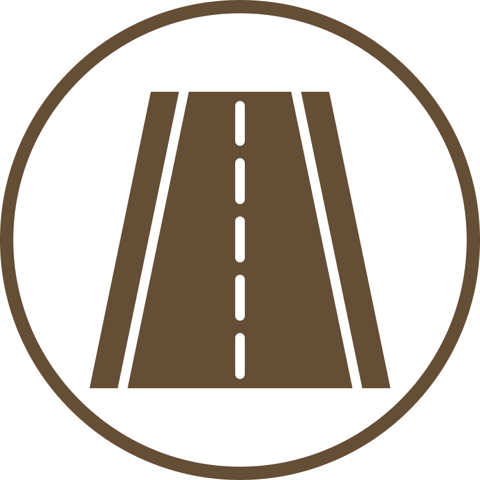

La fondatrice
Julie Ricau
Partenaire des entrepreneurs en mouvement.
Maître Julie Ricau
Avocate
Fondatrice du cabinet
Avant de créer son propre cabinet, Maître Julie RICAU a exercé pendant plusieurs années au sein de cabinets d'avocats intervenant exclusivement en droit des affaires, en conseil et en contentieux.
Son parcours s'est également enrichi d'expériences au sein de service juridique de grands groupes français et européens, de cabinet d'expertise comptable ainsi que d’étude de mandataire judiciaire.
Ces expériences lui ont permis d’acquérir une connaissance globale de l’entreprise, en conscience de ses enjeux, de ses objectifs stratégiques et de ses contraintes opérationnelles.
Cette diversité l’a conduite à privilégier une approche transversale du droit des affaires, fondée sur une complémentarité entre conseil et contentieux.
Forte de cette conviction, Maître Julie RICAU a ainsi décidé de créer son propre cabinet afin d’offrir à ses clients :
- un accompagnement dédié aux entrepreneurs, à chaque étape de leur parcours entrepreneurial ;
- un service de proximité, basé sur l’écoute, la réactivité, la clarté et la transparence.
Parce que chaque entreprise est en mouvement permanent, elle s’inscrit en véritable partenaire du quotidien, accompagnant les entreprises au stade de leur création, de leur structuration, leur développement, leur transformation et leur transmission, ainsi qu’à l’occasion de la défense de leurs intérêts lorsque surviennent un litige ou des difficultés.
Organisée pour intervenir partout en France, Maître Julie RICAU accompagne ses clients au cabinet, à distance ou directement dans leurs locaux, en s’appuyant sur une organisation moderne et dématérialisée ainsi que des outils permettant un suivi réactif et sur-mesure.
Plus qu’un conseil, votre partenaire du quotidien.
Sociétés • Contrats
Commercial • Propriété intellectuelle
Litiges • Procédures collectives
Conseil & contentieux
Nos valeurs
Rigueur
Loyauté
Indépendance
Engagement

Nos engagements
Ecoute & proximité
- Ecoute active
- Interlocuteur dédié
- Compréhension de vos enjeux entrepreneuriaux
- Relation de confiance
Réactivité & accessibilité
- Prise en charge rapide
- Echanges fluides
- Délais maîtrisés
- Organisation moderne et dématérialisée
Clarté & pédagogie
- Conseils pragmatiques
- Explications claires
- Solutions concrètes
- Décisions éclairées
Transparence & honnêteté
- Analyse réaliste des risques et des enjeux
- Recommandations sincères
- Honoraires transparents
- Information continue et visibilité sur votre dossier
Notre méthode de travail
-
Un premier échange sous 24 à 48h ouvrées
Parce que les enjeux de votre entreprise exigent réactivité et disponibilité, nous nous engageons à organiser un premier échange dans un délai de 24 à 48h ouvrées.
Nous prenons alors le temps de comprendre vos besoins, de cerner vos contraintes et de définir ensemble le cadre de notre intervention. -
Un devis chiffré et systématique avant toute intervention
À l'issue de ce premier échange, nous déterminons ensemble la méthode de facturation la plus adaptée à votre dossier (forfait - résultat - taux horaire) et vous adressons rapidement un devis chiffré.
Vous connaissez ainsi précisément le cadre de notre intervention, les diligences envisagées et le coût associé avant de vous engager. -
Une stratégie sur mesure et des solutions pragmatiques
Nous construisons une stratégie adaptée à votre activité et à vos enjeux afin de vous proposer des solutions concrètes, pragmatiques et véritablement sur mesure.
Nous privilégions à cette fin les options les plus pertinentes pour répondre à vos objectifs, sans perdre de vue les réalités opérationnelles de votre métier. -
Des choix éclairés
Nous privilégions une information claire et accessible : chaque option vous est présentée de manière pédagogique au regard de ses risques, de ses conséquences pratiques et de son impact sur votre entreprise.
Vous comprenez ainsi votre dossier et en demeurez pleinement acteur. -
Votre avocat, interlocuteur dédié et toujours joignable
Parce qu'un conseil pertinent suppose une parfaite compréhension de votre entreprise, vous bénéficiez d'un interlocuteur unique, qui connaît votre activité, vos objectifs et votre environnement et qui vous accompagne dans la durée.
Un partenaire de proximité, à l’écoute de vos besoins et réactif à vos sollicitations. -
Une information régulière tout au long de votre dossier
Nous vous tenons étroitement informés au fur et à mesure de l’avancée de votre dossier. Vous bénéficiez ainsi d'une parfaite visibilité sur les démarches engagées et les étapes à venir.
Lorsque cela est nécessaire, nous adaptons ensemble la stratégie retenue afin qu'elle tienne compte de l’évolution de la situation et préserve en tout état de cause vos intérêts.
Notre réseau d’experts de confiance
La synergie des expertises au service de votre dossier.
Des experts de confiance
Certains dossiers nécessitent l’intervention de professionnels du droit ou du chiffre à nos côtés.
- Experts
comptables - Commissaires
aux apports - Notaires
- Commissaires
de justice - Avocats
postulants
locaux - Avocats
spécialistes
(fiscalité, droit
du travail...)
Afin de vous accompagner au mieux, nous avons constitué un réseau d'experts de confiance, sélectionnés pour leurs compétences et leur fiabilité et avec lesquels nous partageons des exigences de qualité communes.
Lorsque votre dossier le nécessite, nous n'hésitons pas à les faire intervenir à nos côtés, afin d’appréhender et traiter votre dossier dans sa globalité.
Un interlocuteur unique
Dans ce cas, nous veillons à ce que chaque expertise mobilisée demeure cohérente avec la stratégie fixée.
Votre avocat demeure votre seul interlocuteur :
- Nous définissons la stratégie.
- Nous pilotons votre dossier.
- Nous coordonnons les différents intervenants.
Vous bénéficiez ainsi de la force d'une expertise pluridisciplinaire réunie autour d’une stratégie commune, tout en conservant les avantages d’un interlocuteur unique à vos côtés.
Notre zone d’intervention
Implanté à Carcassonne (Occitanie), le cabinet accompagne ses clients partout en France.
La localisation géographique ne constitue pas un frein à notre intervention : nous proposons un accompagnement 100% à distance et nous nous déplaçons chaque fois que votre dossier le nécessite.
Au cabinet
Nous vous recevons dans nos locaux à Carcassonne sur rendez-vous, dans un environnement propice à des échanges approfondis.
- A 2 minutes à pied de la gare de Carcassonne
- Stationnement aisé à proximité de la gare et du canal du midi

Accès rapide aux principaux axes routiers
En distanciel
Selon la nature de votre dossier, notre accompagnement peut être réalisé intégralement à distance, dans des conditions garantissant la même qualité de suivi qu’en présentiel.
- Prise de rendez-vous en ligne
- RDV en visioconférence ou au téléphone
- Signature électronique
- Echanges sécurisés de documents
- Archivage numérique
- Paiement en ligne
à distance disponible
Dans vos locaux
Lorsque votre dossier le nécessite, nous nous déplaçons directement sur votre site afin d'intervenir au plus près de vos enjeux et de vos équipes.
Réunions de travail
Echanges dirigeants, associés, équipe, opérationnels
Assemblées générales
Tenue et assistance lors de vos AG, conseils d’administration, comités stratégiques et réunions de vos organes sociaux
Négociations
Accompagnement lors de négociations avec vos partenaires commerciaux, clients, fournisseurs...
Rendez-vous de signature
Présence et accompagnement lors de la signature d'actes ou d'opérations juridiques importantes
Devant les juridictions
Lorsque votre dossier l'exige, nous assurons votre représentation devant les juridictions compétentes et vous accompagnons à chaque étape de la procédure contentieuse.
- Audiences
- Intervention partout en France
- Postulation locale
Partout là où votre dossier l’exige
La défense de vos intérêts implique parfois une présence de votre avocat directement sur le terrain et au plus près des enjeux du dossier, afin de sécuriser le bon déroulement des opérations. Nous nous déplaçons en tout lieu, sur demande.
- Expertises judiciaires
- Constats
- RDV chez votre comptable ou votre notaire